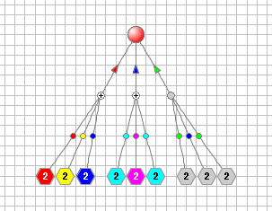

Formalism
This page introduces the Multicolored Logical Net Modeling Formalism, or McLN MF, intended for creating graphical models of qualitative dynamical systems and reproducing their behavior on a computer screen. Respectively, in order to enable, not only representation of the properties of the modeled systems and their states, in the models, but also reproducing changes in the state of the properties, depending on changes of the state of other properties, McLN models are created based on the notion of a bipartite directed graph, the elements of which are considered to be the simple discrete devices that are endowed with the ability to take different qualitative states, on the one hand, and have a certain number of inputs and outputs necessary for the interaction of elements with each other, on the other hand.
The elements of these models, thus, are the representations of such elements of the modeled systems as the Properties, Conditions triggering changes of state of the Properties, Dependencies of the state of Conditions on the state of Properties and Dependencies of the state of Properties on the state of Conditions. Therefore, the McLN models can be, naturally, created as the graphical nets that are characterized by their structure, and by the mechanism of reproducing behavior of the modeled systems that is enabled by endowing the elements of the structure with the ability to perform operations of the Algebra of Symbols.
So, the McLN model is constructed of two types of nodes. The Property nodes, depicted as the big circles or big hexagons states of which are denoted by solid color that fills their surfaces. The Condition nodes, serving as the conditions of changes of states of Property nodes, depicted as the small circles, that are filled with the solid white color and the sign "+" drawn on it, when the condition is satisfied, or by just the solid gray color, when it is not satisfied. And the two types of Arcs directed form the Property nodes to the Conditions nodes, and from the Conditions nodes to the Property nodes. Simple example of the McLN model is presented in Figure 1.
Figure 1. One Property depending on three situations.
Property nodes represent properties and states of the properties of the modeled systems, where the states are denoted as solid color that fills the circles or the hexagons. Conditions nodes are the conditions of changes of states of Property nodes. They represent facts of existence of expected situations that cause Property nodes, dependent on occurrence of situations, to change their states. Hence, states of Conditions nodes may either represent the fact that the expected situation is recognized or the fact that it is not recognized. These states are represented as the solid white color with symbol "+" drawn on it, or as just the solid gray color, respectively.
Arcs directed from a group of the Property nodes to a Condition node represent dependence of the fact of recognition of an expected situation on a certain combination of states of Property nodes. These arcs are marked with the colored dots, particular colors of which are those expected states that the arcs’ input Properties should have in order for the situation to be deemed as existing and recognized.
Arcs directed from a Condition node to some Property nodes represent dependence of the state of the Property nodes on the fact of the existence of the expected situation. These arcs have a small arrow heads marked with that colors of the proposed states which the arcs' output Property nodes should take when the state of the Condition node indicates the fact that the expected situation exists.
So, the structure of the McLN literally means that the state of each Condition node depends on the state of one or more of its input Property nodes, characterizing a particular expected situation determined by the colors of the dots marking the Properties' output arcs.
At the same
time, the state of each Property node depends on the state of
one or more of its input Condition nodes, and takes state represented by the color of the arrowhead
of the arc directed form the Condition node to the dependent Property node in case when the state of
the Condition indicates that all its input Properties represent expected situation denoted by
the marks of their output arcs.
Exclusion>: Case when the state of Condition indicates that the expected situation is
not recognized, or case when two or more Conditions suggest that dependent on different recognized
situations Property should take different states are ignored and current state of the dependent
property stays unchanged.
Both examples, presented in Figure 1 and Figure 2 are developed in the "Qualitative Dynamical System Modeling & Simulation Environment" - the software application developed for creating McLN models and simulation of their behavior.
More on Multicolored Logical Net Structure and Simulation Examples
Details on the structure and the behavior of the McLN models of the qualitative dynamical systems can be found on the Front Page of the stand-alone website, titled “Discrete Symbolic Dynamical Systems & Models” or “D S D S & M”. Open Front Page.
Page McLN MF describes qualitative dynamical systems models development techniques based on McLN MF, the McLN models structure and their behavior. It also illustrates the description using simple but straightforward examples. Open McLN MF
Page McLN Viewer is the executor of several pre-created McLN models that can be chosen by the menu and run by using the control buttons: Start, Stop, One Step and Reset. Open McLN Viewer